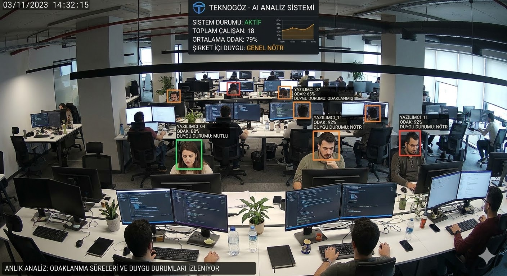

Gözetim Toplumu ve
Mahremiyet Dengesi
7. Hafta: Kim İzliyor, Kim İzleniyor?
Panoptikon
Hapishanesi
Merkezi bir kule, etrafında hücreler. Mahkumlar kuleyi göremez ama izlendiklerini varsayarlar. Bu varsayım tek başına davranışı değiştirir.
"Görünmeden gözetlemek, iktidarın en büyük gücüdür."
— Michel Foucault
Modern CCTV Şebekesi
Londra: 1 kişi başına 68 kamera
Dijital Panoptikon
Sosyal medya, konum takibi, cookie'ler

images/panopticon.png
Dijital Gözetim Sayılarla
Sadece Londra'da kurulu — dünyanın en gözetlenen şehri
Dünya genelinde her gün üretilen veri miktarı (Exabyte)
Kullanıcıların çoğu hangi verilerinin toplandığından habersiz
Clearview AI'ın sosyal medyadan toplanan yüz veritabanı
Shoshana Zuboff buna "Gözetim Kapitalizmi" diyor: Kişisel verileriniz ücretsiz ürünün bedelidir.
Güvenlik vs. Özgürlük
Güvenlik Tarafı
"Koruma için izleme şart"Örnek: 11 Eylül sonrası Patriot Act (ABD)
Özgürlük Tarafı
"Mahremiyet temel haktır"Örnek: Snowden İfşaatları (2013, NSA)
"Saklayacak bir şeyiniz olmasa bile, mahremiyet sizin hakkınızdır." — Edward Snowden
Black Mirror: "Nosedive" (S3E1)
Herkesin birbirini 5 üzerinden puanladığı bir dünya. Puanınız hayatınızın her alanını belirliyor: ev, iş, uçuş, hatta arkadaşlık. Lacie Pound, 4.2 puanını yükseltmeye çalışırken her şeyi kaybeder.
🎭 Sahte Gülümsemeler
Herkes puanını yükseltmek için "yapay" davranışlar sergiler. Gerçek ilişkiler yok olur.
📉 Sosyal Çöküş
Tek bir kötü gün, zincirleme düşük puanlara ve toplumdan dışlanmaya yol açabilir.
🔗 Gerçek Hayat Bağlantısı
Çin Sosyal Kredi, Uber/Airbnb puanlama, Instagram beğeni kültürü — kurgu gerçek oluyor.
Lacie Pound
@lacie_pound
Prime Apart
4.5+ gerekli
İş Başvurusu
✓ Uygun
VIP Uçuş
4.8+ gerekli
Gözetim Teknolojileri
Yüz Tanıma
Clearview AI: 30 milyar+ fotoğraf. Kalabalıkta anında kimlik tespiti.
AB'de kamusal alanda yasaklama tartışması
Konum Takibi
Telefonunuz dakikada 1 konum verisi gönderir. Tüm hareketleriniz kaydedilir.
Google Timeline: Yılların hareketi tek haritada
Davranış Analizi
Sosyal medya beğenileri, arama geçmişi, satın alma kalıplarından profilleme.
Cambridge Analytica: Seçim manipülasyonu
Vaka: Çin Sosyal Kredi Sistemi
Her vatandaşa bir "güvenilirlik puanı" veriliyor. Puanınız düşerse uçak bileti alamaz, çocuğunuz özel okula gidemez, hatta internet hızınız yavaşlatılabilir.
Puan Artıran
Faturaları zamanında ödeme, kan bağışı, toplum hizmeti
Puan Düşüren
Trafik ihlali, sahte haber paylaşma, borç geciktirme
Düşük Puan Cezaları
Uçuş yasağı, tren yasağı, otel kısıtlaması, internet yavaşlatma
Uçuş ❌
Tren ✓
Dijital Korunma
VPN Kullanımı
İnternet trafiğinizi şifreler, IP adresinizi gizler
Uçtan Uca Şifreleme
Signal, WhatsApp E2E — yalnızca siz ve alıcı okur
Cookie Yönetimi
Takip çerezlerini reddedin, düzenli temizleyin
2FA & Güçlü Şifre
İki faktörlü kimlik doğrulama + şifre yöneticisi
KVKK (Türkiye) ve GDPR (AB) — kişisel veri toplama ve işleme için açık rıza zorunludur. Bireylerin verilerini silme hakkı vardır.

images/surveillance.png
Senaryo: "Verimlilik" Takibi
Bir yazılım şirketinde yöneticisiniz. Şirket, çalışanların kameralarını kullanarak "odaklanma sürelerini" ve "duygu durumlarını" analiz eden bir AI sistemi kurmak istiyor.
Verimlilik %20 artacak iddia ediliyor. Kurar mısınız?
Verimlilik Odaklı
"İş saati şirkete ait. Artış herkesin yararına."
Güven Odaklı
"Gözetim yaratıcılığı öldürür, onura aykırı."
Haftaya Bakış
Sıradaki Konu: Kişisel Veriler ve Mahremiyet
BU HAFTA NE ÖĞRENDİK?
Panoptikon
Dijital Gözetim
Güvenlik vs.
Özgürlük Dengesi
Teknolojiler
Yüz Tanıma, AI
Korunma
VPN, E2E, KVKK
Güvenlik için mahremiyetten ne kadar vazgeçebiliriz? Gözetim toplumu kapıda mı?